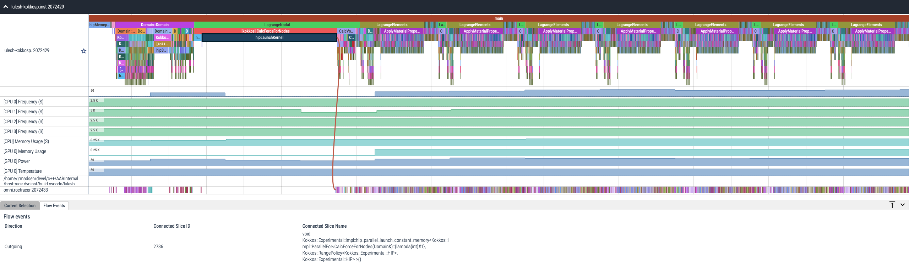

Omnitrace Output¶
Overview¶
The general output form of omnitrace is <OUTPUT_PATH>[/<TIMESTAMP>]/[<PREFIX>]<DATA_NAME>[-<OUTPUT_SUFFIX>].<EXT>.
E.g. with the base configuration:
export OMNITRACE_OUTPUT_PATH=omnitrace-example-output
export OMNITRACE_TIME_OUTPUT=ON
export OMNITRACE_USE_PID=OFF
export OMNITRACE_USE_TIMEMORY=ON
export OMNITRACE_USE_PERFETTO=ON
$ omnitrace -- ./foo
...
[omnitrace] Outputting 'omnitrace-example-output/perfetto-trace.proto'...
[omnitrace] Outputting 'omnitrace-example-output/wall-clock.txt'...
[omnitrace] Outputting 'omnitrace-example-output/wall-clock.json'...
If we enable the OMNITRACE_USE_PID option, then when our non-MPI executable is executed with a PID of 63453:
$ export OMNITRACE_USE_PID=ON
$ omnitrace -- ./foo
...
[omnitrace] Outputting 'omnitrace-example-output/perfetto-trace-63453.proto'...
[omnitrace] Outputting 'omnitrace-example-output/wall-clock-63453.txt'...
[omnitrace] Outputting 'omnitrace-example-output/wall-clock-63453.json'...
If we enable OMNITRACE_TIME_OUTPUT, then a job started on January 31, 2022 at 12:30 PM:
$ export OMNITRACE_TIME_OUTPUT=ON
$ omnitrace -- ./foo
...
[omnitrace] Outputting 'omnitrace-example-output/2022-01-31_12.30_PM/perfetto-trace-63453.proto'...
[omnitrace] Outputting 'omnitrace-example-output/2022-01-31_12.30_PM/wall-clock-63453.txt'...
[omnitrace] Outputting 'omnitrace-example-output/2022-01-31_12.30_PM/wall-clock-63453.json'...
Metadata¶
Omnitrace will output a metadata.json file. This metadata file will contain information about the settings, environment variables, output files, and info about the system and the run:
{
"omnitrace": {
"metadata": {
"info": {
"HW_L1_CACHE_SIZE": 32768,
"HW_L2_CACHE_SIZE": 524288,
"SHELL": "/bin/bash",
"HW_PHYSICAL_CPU": 12,
"CPU_FEATURES": "fpu vme de pse tsc msr pae mce cx8 apic sep mtrr pge mca cmov pat pse36 clflush mmx fxsr sse sse2 ht syscall nx mmxext fxsr_opt pdpe1gb rdtscp lm constant_tsc rep_good nopl nonstop_tsc cpuid extd_apicid aperfmperf pni pclmulqdq monitor ssse3 fma cx16 sse4_1 sse4_2 movbe popcnt aes xsave avx f16c rdrand lahf_lm cmp_legacy svm extapic cr8_legacy abm sse4a misalignsse 3dnowprefetch osvw ibs skinit wdt tce topoext perfctr_core perfctr_nb bpext perfctr_llc mwaitx cpb cat_l3 cdp_l3 hw_pstate ssbd mba ibpb stibp vmmcall fsgsbase bmi1 avx2 smep bmi2 cqm rdt_a rdseed adx smap clflushopt clwb sha_ni xsaveopt xsavec xgetbv1 xsaves cqm_llc cqm_occup_llc cqm_mbm_total cqm_mbm_local clzero irperf xsaveerptr rdpru wbnoinvd arat npt lbrv svm_lock nrip_save tsc_scale vmcb_clean flushbyasid decodeassists pausefilter pfthreshold avic v_vmsave_vmload vgif v_spec_ctrl umip rdpid overflow_recov succor smca sme sev sev_es",
"HW_CONCURRENCY": 24,
"LAUNCH_TIME": "02:04",
"CPU_MODEL": "AMD Ryzen Threadripper PRO 3945WX 12-Cores",
"TIMEMORY_GIT_REVISION": "52e7034fd419ff296506cdef43084f6071dbaba1",
"TIMEMORY_VERSION": "3.3.0rc4",
"CPU_FREQUENCY": 2400,
"TIMEMORY_API": "tim::project::timemory",
"PWD": "/home/jrmadsen/devel/c++/AARInternal/hosttrace-dyninst/build-vscode",
"HW_L3_CACHE_SIZE": 16777216,
"USER": "jrmadsen",
"HOME": "/home/jrmadsen",
"TIMEMORY_GIT_DESCRIBE": "v3.2.0-263-g52e7034f",
"LAUNCH_DATE": "05/08/22",
"CPU_VENDOR": "AuthenticAMD"
},
"output": {
"text": [
{
"value": [
"omnitrace-tests-output/parallel-overhead-binary-rewrite/roctracer.txt"
],
"key": "roctracer"
},
{
"value": [
"omnitrace-tests-output/parallel-overhead-binary-rewrite/wall_clock.txt"
],
"key": "wall_clock"
}
],
"json": [
{
"value": [
"omnitrace-tests-output/parallel-overhead-binary-rewrite/roctracer.json",
"omnitrace-tests-output/parallel-overhead-binary-rewrite/roctracer.tree.json"
],
"key": "roctracer"
},
{
"value": [
"omnitrace-tests-output/parallel-overhead-binary-rewrite/wall_clock.json",
"omnitrace-tests-output/parallel-overhead-binary-rewrite/wall_clock.tree.json"
],
"key": "wall_clock"
}
]
},
"environment": [
{
"value": "/home/jrmadsen",
"key": "HOME"
},
{
"value": "/bin/bash",
"key": "SHELL"
},
{
"value": "jrmadsen",
"key": "USER"
},
{
"value": "true",
"key": "... etc. ..."
}
],
"settings": {
"OMNITRACE_JSON_OUTPUT": {
"count": -1,
"environ_updated": false,
"name": "json_output",
"data_type": "bool",
"initial": true,
"enabled": true,
"value": true,
"max_count": 1,
"cmdline": [
"--omnitrace-json-output"
],
"environ": "OMNITRACE_JSON_OUTPUT",
"config_updated": false,
"categories": [
"io",
"json",
"native"
],
"description": "Write json output files"
},
"... etc. ...": {
"etc.": true
}
}
}
}
}
Configuring Output¶
Core Configuration Settings¶
See also: Customizing Omnitrace Runtime
| Setting | Value | Description |
|---|---|---|
OMNITRACE_OUTPUT_PATH |
Any valid path | Path to folder where output files should be placed |
OMNITRACE_OUTPUT_PREFIX |
String | Useful for multiple runs with different arguments. See Output Prefix Keys |
OMNITRACE_OUTPUT_FILE |
Any valid filepath | Specific location for perfetto output file. |
OMNITRACE_TIME_OUTPUT |
Boolean | Place all output in a timestamped folder, timestamp format controlled via OMNITRACE_TIME_FORMAT |
OMNITRACE_TIME_FORMAT |
String | See strftime man pages for valid identifiers |
OMNITRACE_USE_PID |
Boolean | Append either the PID or the MPI rank to all output files (before the extension) |
Output Prefix Keys¶
Output prefix keys have many uses but most useful when dealing with multiple profiling runs or large MPI jobs. Their inclusion in omnitrace stems from their introduction into timemory for compile-time-perf which needed to be able to create different output files for a generic wrapper around compilation commands while still overwriting the output from the last time a file was compiled.
If you are ever doing scaling studies and specifying options via the command line, it is highly recommend to just
use a common OMNITRACE_OUTPUT_PATH, disable OMNITRACE_TIME_OUTPUT,
set OMNITRACE_OUTPUT_PREFIX="%argt%-" and let omnitrace cleanly organize the output.
| String | Encoding |
|---|---|
%arg<N>% |
Command line argument at position <N> (zero indexed), e.g. %arg0% for first argument. |
%arg<N>_hash% |
MD5 sum of %arg<N>% |
%argv% |
Entire command-line condensed into a single string |
%argv_hash% |
MD5 sum of %argv% |
%argt% |
Similar to %argv% except basename of first command line argument |
%argt_hash% |
MD5 sum if %argt% |
%args% |
All command line arguments condensed into a single string |
%args_hash% |
MD5 sum of %args% |
%tag% |
Basename of first command line argument |
%tag_hash% |
MD5 sum of %tag% |
%pid% |
Process identifier (i.e. getpid()) |
%job% |
Value of SLURM_JOB_ID environment variable if exists, else 0 |
%rank% |
Value of SLURM_PROCID environment variable if exists, else MPI_Comm_rank (or 0 non-mpi) |
%size% |
MPI_Comm_size or 1 if non-mpi |
%m |
Shorthand for %argt_hash% |
%p |
Shorthand for %pid% |
%j |
Shorthand for %job% |
%r |
Shorthand for %rank% |
%s |
Shorthand for %size% |
Any output prefix key which contain a
/will have the/characters replaced with_and any leading underscores will be stripped, e.g. if%arg0%is/usr/bin/foo, this will translate tousr_bin_foo. Additionally, any%arg<N>%keys which do not have a command line argument at position<N>will be ignored.
Perfetto Output¶
Use the OMNITRACE_OUTPUT_FILE to specify a specific location. If this is an absolute path, then all OMNITRACE_OUTPUT_PATH, etc.
settings will be ignored. Visit ui.perfetto.dev and open this file.


Timemory Output¶
Use omnitrace-avail --components --filename to view the base filename for each component. E.g.
$ ./omnitrace-avail wall_clock -C -f
|---------------------------------|---------------|------------------------|
| COMPONENT | AVAILABLE | FILENAME |
|---------------------------------|---------------|------------------------|
| wall_clock | true | wall_clock |
| sampling_wall_clock | true | sampling_wall_clock |
|---------------------------------|---------------|------------------------|
Setting OMNITRACE_COLLAPSE_THREADS=ON and/or OMNITRACE_COLLAPSE_PROCESSES=ON (only valid with full MPI support) the timemory output
will combine the per-thread and/or per-rank data which have identical call-stacks.
The OMNITRACE_FLAT_PROFILE setting will remove all call stack heirarchy. Using OMNITRACE_FLAT_PROFILE=ON in combination
with OMNITRACE_COLLAPSE_THREADS=ON is a useful configuration for identifying min/max measurements regardless of calling context.
The OMNITRACE_TIMELINE_PROFILE setting (with OMNITRACE_FLAT_PROFILE=OFF) will effectively generate similar data that can be found
in perfetto. Enabling timeline and flat profiling will effectively generate similar data to strace. However, while timemory in general
requires significantly less memory than perfetto, this is not the case in timeline mode so activate this setting with caution.
Timemory Text Output¶
Hint: the generation of text output is configurable via
OMNITRACE_TEXT_OUTPUT
Timemory text output files are meant for human-consumption (use JSON formats for analysis)
and as such, some fields such as the LABEL fields may be truncated for readability.
Modification of the truncation can be changed via the OMNITRACE_MAX_WIDTH setting.
Timemory Text Output Example¶
In the below, the NN field in |NN>>> is the thread ID. If MPI support is enabled, this will be |MM|NN>>> and MM will be the rank.
If OMNITRACE_COLLAPSE_THREADS=ON and OMNITRACE_COLLAPSE_PROCESSES=ON, neither the MM nor the NN will be present unless the
component explicitly sets type-traits which specify that the data is only relevant per-thread or per-process, e.g. the thread_cpu_clock clock component.
|-------------------------------------------------------------------------------------------------------------------------------------------------------------------------------------|
| REAL-CLOCK TIMER (I.E. WALL-CLOCK TIMER) |
|-------------------------------------------------------------------------------------------------------------------------------------------------------------------------------------|
| LABEL | COUNT | DEPTH | METRIC | UNITS | SUM | MEAN | MIN | MAX | VAR | STDDEV | % SELF |
|--------------------------------------------------------------|--------|--------|------------|--------|-----------|-----------|-----------|-----------|----------|----------|--------|
| |00>>> main | 1 | 0 | wall_clock | sec | 13.360265 | 13.360265 | 13.360265 | 13.360265 | 0.000000 | 0.000000 | 18.2 |
| |00>>> |_ompt_thread_initial | 1 | 1 | wall_clock | sec | 10.924161 | 10.924161 | 10.924161 | 10.924161 | 0.000000 | 0.000000 | 0.0 |
| |00>>> |_ompt_implicit_task | 1 | 2 | wall_clock | sec | 10.923050 | 10.923050 | 10.923050 | 10.923050 | 0.000000 | 0.000000 | 0.1 |
| |00>>> |_ompt_parallel [parallelism=12] | 1 | 3 | wall_clock | sec | 10.915026 | 10.915026 | 10.915026 | 10.915026 | 0.000000 | 0.000000 | 0.0 |
| |00>>> |_ompt_implicit_task | 1 | 4 | wall_clock | sec | 10.647951 | 10.647951 | 10.647951 | 10.647951 | 0.000000 | 0.000000 | 0.0 |
| |00>>> |_ompt_work_loop | 156 | 5 | wall_clock | sec | 0.000812 | 0.000005 | 0.000001 | 0.000212 | 0.000000 | 0.000018 | 100.0 |
| |00>>> |_ompt_work_single_executor | 40 | 5 | wall_clock | sec | 0.000016 | 0.000000 | 0.000000 | 0.000001 | 0.000000 | 0.000000 | 100.0 |
| |00>>> |_ompt_sync_region_barrier_implicit | 308 | 5 | wall_clock | sec | 0.000629 | 0.000002 | 0.000001 | 0.000017 | 0.000000 | 0.000002 | 100.0 |
| |00>>> |_conj_grad | 76 | 5 | wall_clock | sec | 10.641165 | 0.140015 | 0.131894 | 0.155099 | 0.000017 | 0.004080 | 1.0 |
| |00>>> |_ompt_work_single_executor | 803 | 6 | wall_clock | sec | 0.000292 | 0.000000 | 0.000000 | 0.000001 | 0.000000 | 0.000000 | 100.0 |
| |00>>> |_ompt_work_loop | 7904 | 6 | wall_clock | sec | 7.420265 | 0.000939 | 0.000005 | 0.006974 | 0.000003 | 0.001613 | 100.0 |
| |00>>> |_ompt_sync_region_barrier_implicit | 6004 | 6 | wall_clock | sec | 0.283160 | 0.000047 | 0.000001 | 0.004087 | 0.000000 | 0.000303 | 100.0 |
| |00>>> |_ompt_sync_region_barrier_implementation | 3952 | 6 | wall_clock | sec | 2.829252 | 0.000716 | 0.000007 | 0.009005 | 0.000001 | 0.000985 | 99.7 |
| |00>>> |_ompt_sync_region_reduction | 15808 | 7 | wall_clock | sec | 0.009142 | 0.000001 | 0.000000 | 0.000007 | 0.000000 | 0.000000 | 100.0 |
| |00>>> |_ompt_work_single_other | 1249 | 6 | wall_clock | sec | 0.000270 | 0.000000 | 0.000000 | 0.000001 | 0.000000 | 0.000000 | 100.0 |
| |00>>> |_ompt_work_single_other | 114 | 5 | wall_clock | sec | 0.000024 | 0.000000 | 0.000000 | 0.000001 | 0.000000 | 0.000000 | 100.0 |
| |00>>> |_ompt_sync_region_barrier_implementation | 76 | 5 | wall_clock | sec | 0.000876 | 0.000012 | 0.000008 | 0.000025 | 0.000000 | 0.000003 | 84.4 |
| |00>>> |_ompt_sync_region_reduction | 304 | 6 | wall_clock | sec | 0.000136 | 0.000000 | 0.000000 | 0.000001 | 0.000000 | 0.000000 | 100.0 |
| |00>>> |_ompt_master | 226 | 5 | wall_clock | sec | 0.001978 | 0.000009 | 0.000000 | 0.000038 | 0.000000 | 0.000012 | 100.0 |
| |11>>> |_ompt_thread_worker | 1 | 4 | wall_clock | sec | 10.656145 | 10.656145 | 10.656145 | 10.656145 | 0.000000 | 0.000000 | 0.1 |
| |11>>> |_ompt_implicit_task | 1 | 5 | wall_clock | sec | 10.649183 | 10.649183 | 10.649183 | 10.649183 | 0.000000 | 0.000000 | 0.0 |
| |11>>> |_ompt_work_loop | 156 | 6 | wall_clock | sec | 0.000852 | 0.000005 | 0.000002 | 0.000230 | 0.000000 | 0.000019 | 100.0 |
| |11>>> |_ompt_work_single_other | 149 | 6 | wall_clock | sec | 0.000035 | 0.000000 | 0.000000 | 0.000000 | 0.000000 | 0.000000 | 100.0 |
| |11>>> |_ompt_sync_region_barrier_implicit | 308 | 6 | wall_clock | sec | 0.004135 | 0.000013 | 0.000001 | 0.001233 | 0.000000 | 0.000070 | 100.0 |
| |11>>> |_conj_grad | 76 | 6 | wall_clock | sec | 10.641302 | 0.140017 | 0.131896 | 0.155102 | 0.000017 | 0.004080 | 0.6 |
| |11>>> |_ompt_work_single_other | 2023 | 7 | wall_clock | sec | 0.000458 | 0.000000 | 0.000000 | 0.000001 | 0.000000 | 0.000000 | 100.0 |
| |11>>> |_ompt_work_loop | 7904 | 7 | wall_clock | sec | 8.253555 | 0.001044 | 0.000005 | 0.008021 | 0.000003 | 0.001790 | 100.0 |
| |11>>> |_ompt_sync_region_barrier_implicit | 6004 | 7 | wall_clock | sec | 0.263840 | 0.000044 | 0.000001 | 0.004087 | 0.000000 | 0.000297 | 100.0 |
| |11>>> |_ompt_sync_region_barrier_implementation | 3952 | 7 | wall_clock | sec | 2.059823 | 0.000521 | 0.000007 | 0.009508 | 0.000001 | 0.000863 | 100.0 |
| |11>>> |_ompt_work_single_executor | 29 | 7 | wall_clock | sec | 0.000011 | 0.000000 | 0.000000 | 0.000001 | 0.000000 | 0.000000 | 100.0 |
| |11>>> |_ompt_work_single_executor | 5 | 6 | wall_clock | sec | 0.000002 | 0.000000 | 0.000000 | 0.000000 | 0.000000 | 0.000000 | 100.0 |
| |11>>> |_ompt_sync_region_barrier_implementation | 76 | 6 | wall_clock | sec | 0.000975 | 0.000013 | 0.000008 | 0.000024 | 0.000000 | 0.000003 | 100.0 |
| |10>>> |_ompt_thread_worker | 1 | 4 | wall_clock | sec | 10.681664 | 10.681664 | 10.681664 | 10.681664 | 0.000000 | 0.000000 | 0.3 |
| |10>>> |_ompt_implicit_task | 1 | 5 | wall_clock | sec | 10.649158 | 10.649158 | 10.649158 | 10.649158 | 0.000000 | 0.000000 | 0.0 |
| |10>>> |_ompt_work_loop | 156 | 6 | wall_clock | sec | 0.000863 | 0.000006 | 0.000002 | 0.000231 | 0.000000 | 0.000019 | 100.0 |
| |10>>> |_ompt_work_single_other | 140 | 6 | wall_clock | sec | 0.000037 | 0.000000 | 0.000000 | 0.000001 | 0.000000 | 0.000000 | 100.0 |
| |10>>> |_ompt_sync_region_barrier_implicit | 308 | 6 | wall_clock | sec | 0.004149 | 0.000013 | 0.000001 | 0.001221 | 0.000000 | 0.000070 | 100.0 |
| |10>>> |_conj_grad | 76 | 6 | wall_clock | sec | 10.641288 | 0.140017 | 0.131896 | 0.155101 | 0.000017 | 0.004080 | 0.7 |
| |10>>> |_ompt_work_single_other | 1883 | 7 | wall_clock | sec | 0.000487 | 0.000000 | 0.000000 | 0.000001 | 0.000000 | 0.000000 | 100.0 |
| |10>>> |_ompt_work_loop | 7904 | 7 | wall_clock | sec | 8.174545 | 0.001034 | 0.000005 | 0.006899 | 0.000003 | 0.001766 | 100.0 |
| |10>>> |_ompt_sync_region_barrier_implicit | 6004 | 7 | wall_clock | sec | 0.268808 | 0.000045 | 0.000001 | 0.004087 | 0.000000 | 0.000299 | 100.0 |
| |10>>> |_ompt_sync_region_barrier_implementation | 3952 | 7 | wall_clock | sec | 2.126988 | 0.000538 | 0.000007 | 0.009843 | 0.000001 | 0.000872 | 99.9 |
| |10>>> |_ompt_sync_region_reduction | 3952 | 8 | wall_clock | sec | 0.002574 | 0.000001 | 0.000000 | 0.000014 | 0.000000 | 0.000000 | 100.0 |
| |10>>> |_ompt_work_single_executor | 169 | 7 | wall_clock | sec | 0.000072 | 0.000000 | 0.000000 | 0.000001 | 0.000000 | 0.000000 | 100.0 |
| |10>>> |_ompt_sync_region_barrier_implementation | 76 | 6 | wall_clock | sec | 0.000954 | 0.000013 | 0.000009 | 0.000023 | 0.000000 | 0.000003 | 95.9 |
| |10>>> |_ompt_sync_region_reduction | 76 | 7 | wall_clock | sec | 0.000039 | 0.000001 | 0.000000 | 0.000001 | 0.000000 | 0.000000 | 100.0 |
| |10>>> |_ompt_work_single_executor | 14 | 6 | wall_clock | sec | 0.000006 | 0.000000 | 0.000000 | 0.000001 | 0.000000 | 0.000000 | 100.0 |
| |09>>> |_ompt_thread_worker | 1 | 4 | wall_clock | sec | 10.686552 | 10.686552 | 10.686552 | 10.686552 | 0.000000 | 0.000000 | 0.3 |
| |09>>> |_ompt_implicit_task | 1 | 5 | wall_clock | sec | 10.649151 | 10.649151 | 10.649151 | 10.649151 | 0.000000 | 0.000000 | 0.0 |
| |09>>> |_ompt_work_loop | 156 | 6 | wall_clock | sec | 0.000880 | 0.000006 | 0.000002 | 0.000258 | 0.000000 | 0.000021 | 100.0 |
| |09>>> |_ompt_work_single_other | 148 | 6 | wall_clock | sec | 0.000034 | 0.000000 | 0.000000 | 0.000001 | 0.000000 | 0.000000 | 100.0 |
| |09>>> |_ompt_sync_region_barrier_implicit | 308 | 6 | wall_clock | sec | 0.004129 | 0.000013 | 0.000001 | 0.001210 | 0.000000 | 0.000069 | 100.0 |
| |09>>> |_conj_grad | 76 | 6 | wall_clock | sec | 10.641308 | 0.140017 | 0.131895 | 0.155102 | 0.000017 | 0.004080 | 0.7 |
| |09>>> |_ompt_work_single_other | 2043 | 7 | wall_clock | sec | 0.000473 | 0.000000 | 0.000000 | 0.000001 | 0.000000 | 0.000000 | 100.0 |
| |09>>> |_ompt_work_loop | 7904 | 7 | wall_clock | sec | 7.977001 | 0.001009 | 0.000005 | 0.007325 | 0.000003 | 0.001732 | 100.0 |
| |09>>> |_ompt_sync_region_barrier_implicit | 6004 | 7 | wall_clock | sec | 0.242996 | 0.000040 | 0.000001 | 0.004087 | 0.000000 | 0.000284 | 100.0 |
| |09>>> |_ompt_sync_region_barrier_implementation | 3952 | 7 | wall_clock | sec | 2.350895 | 0.000595 | 0.000007 | 0.008689 | 0.000001 | 0.000926 | 100.0 |
| |09>>> |_ompt_work_single_executor | 9 | 7 | wall_clock | sec | 0.000004 | 0.000000 | 0.000000 | 0.000001 | 0.000000 | 0.000000 | 100.0 |
| |09>>> |_ompt_sync_region_barrier_implementation | 76 | 6 | wall_clock | sec | 0.000973 | 0.000013 | 0.000008 | 0.000025 | 0.000000 | 0.000003 | 100.0 |
| |09>>> |_ompt_work_single_executor | 6 | 6 | wall_clock | sec | 0.000002 | 0.000000 | 0.000000 | 0.000000 | 0.000000 | 0.000000 | 100.0 |
| |08>>> |_ompt_thread_worker | 1 | 4 | wall_clock | sec | 10.721622 | 10.721622 | 10.721622 | 10.721622 | 0.000000 | 0.000000 | 0.7 |
| |08>>> |_ompt_implicit_task | 1 | 5 | wall_clock | sec | 10.649135 | 10.649135 | 10.649135 | 10.649135 | 0.000000 | 0.000000 | 0.0 |
| |08>>> |_ompt_work_loop | 156 | 6 | wall_clock | sec | 0.000839 | 0.000005 | 0.000001 | 0.000231 | 0.000000 | 0.000019 | 100.0 |
| |08>>> |_ompt_work_single_other | 141 | 6 | wall_clock | sec | 0.000030 | 0.000000 | 0.000000 | 0.000001 | 0.000000 | 0.000000 | 100.0 |
| |08>>> |_ompt_sync_region_barrier_implicit | 308 | 6 | wall_clock | sec | 0.004114 | 0.000013 | 0.000001 | 0.001198 | 0.000000 | 0.000069 | 100.0 |
| |08>>> |_conj_grad | 76 | 6 | wall_clock | sec | 10.641294 | 0.140017 | 0.131896 | 0.155101 | 0.000017 | 0.004080 | 0.6 |
| |08>>> |_ompt_work_single_other | 1742 | 7 | wall_clock | sec | 0.000392 | 0.000000 | 0.000000 | 0.000001 | 0.000000 | 0.000000 | 100.0 |
| |08>>> |_ompt_work_loop | 7904 | 7 | wall_clock | sec | 8.306388 | 0.001051 | 0.000005 | 0.007886 | 0.000003 | 0.001795 | 100.0 |
| |08>>> |_ompt_sync_region_barrier_implicit | 6004 | 7 | wall_clock | sec | 0.274358 | 0.000046 | 0.000001 | 0.004090 | 0.000000 | 0.000302 | 100.0 |
| |08>>> |_ompt_sync_region_barrier_implementation | 3952 | 7 | wall_clock | sec | 1.991251 | 0.000504 | 0.000007 | 0.008694 | 0.000001 | 0.000844 | 99.8 |
| |08>>> |_ompt_sync_region_reduction | 7904 | 8 | wall_clock | sec | 0.003816 | 0.000000 | 0.000000 | 0.000017 | 0.000000 | 0.000000 | 100.0 |
| |08>>> |_ompt_work_single_executor | 310 | 7 | wall_clock | sec | 0.000112 | 0.000000 | 0.000000 | 0.000001 | 0.000000 | 0.000000 | 100.0 |
| |08>>> |_ompt_sync_region_barrier_implementation | 76 | 6 | wall_clock | sec | 0.000955 | 0.000013 | 0.000009 | 0.000026 | 0.000000 | 0.000003 | 93.7 |
| |08>>> |_ompt_sync_region_reduction | 152 | 7 | wall_clock | sec | 0.000060 | 0.000000 | 0.000000 | 0.000001 | 0.000000 | 0.000000 | 100.0 |
| |08>>> |_ompt_work_single_executor | 13 | 6 | wall_clock | sec | 0.000005 | 0.000000 | 0.000000 | 0.000001 | 0.000000 | 0.000000 | 100.0 |
| |07>>> |_ompt_thread_worker | 1 | 4 | wall_clock | sec | 10.747282 | 10.747282 | 10.747282 | 10.747282 | 0.000000 | 0.000000 | 0.9 |
| |07>>> |_ompt_implicit_task | 1 | 5 | wall_clock | sec | 10.649093 | 10.649093 | 10.649093 | 10.649093 | 0.000000 | 0.000000 | 0.0 |
| |07>>> |_ompt_work_loop | 156 | 6 | wall_clock | sec | 0.000923 | 0.000006 | 0.000002 | 0.000231 | 0.000000 | 0.000019 | 100.0 |
| |07>>> |_ompt_work_single_other | 152 | 6 | wall_clock | sec | 0.000048 | 0.000000 | 0.000000 | 0.000001 | 0.000000 | 0.000000 | 100.0 |
| |07>>> |_ompt_sync_region_barrier_implicit | 308 | 6 | wall_clock | sec | 0.003981 | 0.000013 | 0.000001 | 0.001186 | 0.000000 | 0.000068 | 100.0 |
| |07>>> |_conj_grad | 76 | 6 | wall_clock | sec | 10.641295 | 0.140017 | 0.131896 | 0.155101 | 0.000017 | 0.004080 | 0.7 |
| |07>>> |_ompt_work_single_other | 2043 | 7 | wall_clock | sec | 0.000648 | 0.000000 | 0.000000 | 0.000001 | 0.000000 | 0.000000 | 100.0 |
| |07>>> |_ompt_work_loop | 7904 | 7 | wall_clock | sec | 7.978811 | 0.001009 | 0.000005 | 0.006728 | 0.000003 | 0.001732 | 100.0 |
| |07>>> |_ompt_sync_region_barrier_implicit | 6004 | 7 | wall_clock | sec | 0.199939 | 0.000033 | 0.000001 | 0.004086 | 0.000000 | 0.000255 | 100.0 |
| |07>>> |_ompt_sync_region_barrier_implementation | 3952 | 7 | wall_clock | sec | 2.385843 | 0.000604 | 0.000009 | 0.009039 | 0.000001 | 0.000938 | 100.0 |
| |07>>> |_ompt_work_single_executor | 9 | 7 | wall_clock | sec | 0.000004 | 0.000000 | 0.000000 | 0.000001 | 0.000000 | 0.000000 | 100.0 |
| |07>>> |_ompt_sync_region_barrier_implementation | 76 | 6 | wall_clock | sec | 0.000905 | 0.000012 | 0.000010 | 0.000025 | 0.000000 | 0.000003 | 100.0 |
| |07>>> |_ompt_work_single_executor | 2 | 6 | wall_clock | sec | 0.000001 | 0.000001 | 0.000000 | 0.000001 | 0.000000 | 0.000000 | 100.0 |
| |06>>> |_ompt_thread_worker | 1 | 4 | wall_clock | sec | 10.772278 | 10.772278 | 10.772278 | 10.772278 | 0.000000 | 0.000000 | 1.1 |
| |06>>> |_ompt_implicit_task | 1 | 5 | wall_clock | sec | 10.649092 | 10.649092 | 10.649092 | 10.649092 | 0.000000 | 0.000000 | 0.0 |
| |06>>> |_ompt_work_loop | 156 | 6 | wall_clock | sec | 0.000888 | 0.000006 | 0.000002 | 0.000236 | 0.000000 | 0.000020 | 100.0 |
| |06>>> |_ompt_work_single_other | 153 | 6 | wall_clock | sec | 0.000037 | 0.000000 | 0.000000 | 0.000001 | 0.000000 | 0.000000 | 100.0 |
| |06>>> |_ompt_sync_region_barrier_implicit | 308 | 6 | wall_clock | sec | 0.004090 | 0.000013 | 0.000001 | 0.001175 | 0.000000 | 0.000067 | 100.0 |
| |06>>> |_conj_grad | 76 | 6 | wall_clock | sec | 10.641317 | 0.140017 | 0.131896 | 0.155101 | 0.000017 | 0.004080 | 0.8 |
| |06>>> |_ompt_work_single_other | 2041 | 7 | wall_clock | sec | 0.000476 | 0.000000 | 0.000000 | 0.000001 | 0.000000 | 0.000000 | 100.0 |
| |06>>> |_ompt_work_loop | 7904 | 7 | wall_clock | sec | 7.467961 | 0.000945 | 0.000005 | 0.010712 | 0.000003 | 0.001627 | 100.0 |
| |06>>> |_ompt_sync_region_barrier_implicit | 6004 | 7 | wall_clock | sec | 0.250883 | 0.000042 | 0.000001 | 0.004087 | 0.000000 | 0.000285 | 100.0 |
| |06>>> |_ompt_sync_region_barrier_implementation | 3952 | 7 | wall_clock | sec | 2.838733 | 0.000718 | 0.000009 | 0.009015 | 0.000001 | 0.001015 | 99.9 |
| |06>>> |_ompt_sync_region_reduction | 3952 | 8 | wall_clock | sec | 0.003334 | 0.000001 | 0.000000 | 0.000025 | 0.000000 | 0.000001 | 100.0 |
| |06>>> |_ompt_work_single_executor | 11 | 7 | wall_clock | sec | 0.000005 | 0.000000 | 0.000000 | 0.000001 | 0.000000 | 0.000000 | 100.0 |
| |06>>> |_ompt_sync_region_barrier_implementation | 76 | 6 | wall_clock | sec | 0.000940 | 0.000012 | 0.000009 | 0.000025 | 0.000000 | 0.000003 | 95.4 |
| |06>>> |_ompt_sync_region_reduction | 76 | 7 | wall_clock | sec | 0.000044 | 0.000001 | 0.000000 | 0.000001 | 0.000000 | 0.000000 | 100.0 |
| |06>>> |_ompt_work_single_executor | 1 | 6 | wall_clock | sec | 0.000000 | 0.000000 | 0.000000 | 0.000000 | 0.000000 | 0.000000 | 100.0 |
| |05>>> |_ompt_thread_worker | 1 | 4 | wall_clock | sec | 10.797950 | 10.797950 | 10.797950 | 10.797950 | 0.000000 | 0.000000 | 1.4 |
| |05>>> |_ompt_implicit_task | 1 | 5 | wall_clock | sec | 10.649072 | 10.649072 | 10.649072 | 10.649072 | 0.000000 | 0.000000 | 0.0 |
| |05>>> |_ompt_work_loop | 156 | 6 | wall_clock | sec | 0.000879 | 0.000006 | 0.000001 | 0.000248 | 0.000000 | 0.000021 | 100.0 |
| |05>>> |_ompt_work_single_other | 142 | 6 | wall_clock | sec | 0.000034 | 0.000000 | 0.000000 | 0.000001 | 0.000000 | 0.000000 | 100.0 |
| |05>>> |_ompt_sync_region_barrier_implicit | 308 | 6 | wall_clock | sec | 0.004062 | 0.000013 | 0.000002 | 0.001163 | 0.000000 | 0.000067 | 100.0 |
| |05>>> |_conj_grad | 76 | 6 | wall_clock | sec | 10.641291 | 0.140017 | 0.131896 | 0.155101 | 0.000017 | 0.004080 | 0.7 |
| |05>>> |_ompt_work_single_other | 2038 | 7 | wall_clock | sec | 0.000500 | 0.000000 | 0.000000 | 0.000001 | 0.000000 | 0.000000 | 100.0 |
| |05>>> |_ompt_work_loop | 7904 | 7 | wall_clock | sec | 8.279191 | 0.001047 | 0.000005 | 0.006596 | 0.000003 | 0.001792 | 100.0 |
| |05>>> |_ompt_sync_region_barrier_implicit | 6004 | 7 | wall_clock | sec | 0.250939 | 0.000042 | 0.000001 | 0.004090 | 0.000000 | 0.000286 | 100.0 |
| |05>>> |_ompt_sync_region_barrier_implementation | 3952 | 7 | wall_clock | sec | 2.039013 | 0.000516 | 0.000009 | 0.008689 | 0.000001 | 0.000855 | 100.0 |
| |05>>> |_ompt_work_single_executor | 14 | 7 | wall_clock | sec | 0.000005 | 0.000000 | 0.000000 | 0.000000 | 0.000000 | 0.000000 | 100.0 |
| |05>>> |_ompt_sync_region_barrier_implementation | 76 | 6 | wall_clock | sec | 0.000926 | 0.000012 | 0.000009 | 0.000023 | 0.000000 | 0.000003 | 100.0 |
| |05>>> |_ompt_work_single_executor | 12 | 6 | wall_clock | sec | 0.000005 | 0.000000 | 0.000000 | 0.000001 | 0.000000 | 0.000000 | 100.0 |
| |04>>> |_ompt_thread_worker | 1 | 4 | wall_clock | sec | 10.825935 | 10.825935 | 10.825935 | 10.825935 | 0.000000 | 0.000000 | 1.6 |
| |04>>> |_ompt_implicit_task | 1 | 5 | wall_clock | sec | 10.649068 | 10.649068 | 10.649068 | 10.649068 | 0.000000 | 0.000000 | 0.0 |
| |04>>> |_ompt_work_loop | 156 | 6 | wall_clock | sec | 0.000884 | 0.000006 | 0.000002 | 0.000245 | 0.000000 | 0.000020 | 100.0 |
| |04>>> |_ompt_work_single_other | 150 | 6 | wall_clock | sec | 0.000034 | 0.000000 | 0.000000 | 0.000001 | 0.000000 | 0.000000 | 100.0 |
| |04>>> |_ompt_sync_region_barrier_implicit | 308 | 6 | wall_clock | sec | 0.004069 | 0.000013 | 0.000001 | 0.001151 | 0.000000 | 0.000066 | 100.0 |
| |04>>> |_conj_grad | 76 | 6 | wall_clock | sec | 10.641300 | 0.140017 | 0.131896 | 0.155101 | 0.000017 | 0.004080 | 1.1 |
| |04>>> |_ompt_work_single_other | 2041 | 7 | wall_clock | sec | 0.000448 | 0.000000 | 0.000000 | 0.000001 | 0.000000 | 0.000000 | 100.0 |
| |04>>> |_ompt_work_loop | 7904 | 7 | wall_clock | sec | 7.438393 | 0.000941 | 0.000005 | 0.007090 | 0.000003 | 0.001624 | 100.0 |
| |04>>> |_ompt_sync_region_barrier_implicit | 6004 | 7 | wall_clock | sec | 0.270654 | 0.000045 | 0.000001 | 0.004090 | 0.000000 | 0.000295 | 100.0 |
| |04>>> |_ompt_sync_region_barrier_implementation | 3952 | 7 | wall_clock | sec | 2.819165 | 0.000713 | 0.000009 | 0.008379 | 0.000001 | 0.001013 | 99.9 |
| |04>>> |_ompt_sync_region_reduction | 7904 | 8 | wall_clock | sec | 0.003932 | 0.000000 | 0.000000 | 0.000015 | 0.000000 | 0.000000 | 100.0 |
| |04>>> |_ompt_work_single_executor | 11 | 7 | wall_clock | sec | 0.000005 | 0.000000 | 0.000000 | 0.000001 | 0.000000 | 0.000000 | 100.0 |
| |04>>> |_ompt_sync_region_barrier_implementation | 76 | 6 | wall_clock | sec | 0.000936 | 0.000012 | 0.000009 | 0.000025 | 0.000000 | 0.000003 | 93.2 |
| |04>>> |_ompt_sync_region_reduction | 152 | 7 | wall_clock | sec | 0.000064 | 0.000000 | 0.000000 | 0.000001 | 0.000000 | 0.000000 | 100.0 |
| |04>>> |_ompt_work_single_executor | 4 | 6 | wall_clock | sec | 0.000001 | 0.000000 | 0.000000 | 0.000000 | 0.000000 | 0.000000 | 100.0 |
| |03>>> |_ompt_thread_worker | 1 | 4 | wall_clock | sec | 10.849322 | 10.849322 | 10.849322 | 10.849322 | 0.000000 | 0.000000 | 1.8 |
| |03>>> |_ompt_implicit_task | 1 | 5 | wall_clock | sec | 10.649075 | 10.649075 | 10.649075 | 10.649075 | 0.000000 | 0.000000 | 0.0 |
| |03>>> |_ompt_work_loop | 156 | 6 | wall_clock | sec | 0.000861 | 0.000006 | 0.000002 | 0.000238 | 0.000000 | 0.000020 | 100.0 |
| |03>>> |_ompt_work_single_other | 120 | 6 | wall_clock | sec | 0.000028 | 0.000000 | 0.000000 | 0.000001 | 0.000000 | 0.000000 | 100.0 |
| |03>>> |_ompt_sync_region_barrier_implicit | 308 | 6 | wall_clock | sec | 0.003993 | 0.000013 | 0.000001 | 0.001138 | 0.000000 | 0.000065 | 100.0 |
| |03>>> |_conj_grad | 76 | 6 | wall_clock | sec | 10.641302 | 0.140017 | 0.131896 | 0.155101 | 0.000017 | 0.004080 | 0.8 |
| |03>>> |_ompt_work_single_other | 1756 | 7 | wall_clock | sec | 0.000426 | 0.000000 | 0.000000 | 0.000001 | 0.000000 | 0.000000 | 100.0 |
| |03>>> |_ompt_work_loop | 7904 | 7 | wall_clock | sec | 8.005617 | 0.001013 | 0.000005 | 0.011500 | 0.000003 | 0.001741 | 100.0 |
| |03>>> |_ompt_sync_region_barrier_implicit | 6004 | 7 | wall_clock | sec | 0.231485 | 0.000039 | 0.000001 | 0.004086 | 0.000000 | 0.000277 | 100.0 |
| |03>>> |_ompt_sync_region_barrier_implementation | 3952 | 7 | wall_clock | sec | 2.320428 | 0.000587 | 0.000009 | 0.010868 | 0.000001 | 0.000912 | 100.0 |
| |03>>> |_ompt_work_single_executor | 296 | 7 | wall_clock | sec | 0.000120 | 0.000000 | 0.000000 | 0.000001 | 0.000000 | 0.000000 | 100.0 |
| |03>>> |_ompt_sync_region_barrier_implementation | 76 | 6 | wall_clock | sec | 0.000967 | 0.000013 | 0.000010 | 0.000023 | 0.000000 | 0.000003 | 100.0 |
| |03>>> |_ompt_work_single_executor | 34 | 6 | wall_clock | sec | 0.000013 | 0.000000 | 0.000000 | 0.000001 | 0.000000 | 0.000000 | 100.0 |
| |02>>> |_ompt_thread_worker | 1 | 4 | wall_clock | sec | 10.876387 | 10.876387 | 10.876387 | 10.876387 | 0.000000 | 0.000000 | 2.1 |
| |02>>> |_ompt_implicit_task | 1 | 5 | wall_clock | sec | 10.649050 | 10.649050 | 10.649050 | 10.649050 | 0.000000 | 0.000000 | 0.0 |
| |02>>> |_ompt_work_loop | 156 | 6 | wall_clock | sec | 0.000924 | 0.000006 | 0.000001 | 0.000241 | 0.000000 | 0.000020 | 100.0 |
| |02>>> |_ompt_work_single_other | 139 | 6 | wall_clock | sec | 0.000040 | 0.000000 | 0.000000 | 0.000001 | 0.000000 | 0.000000 | 100.0 |
| |02>>> |_ompt_sync_region_barrier_implicit | 308 | 6 | wall_clock | sec | 0.003972 | 0.000013 | 0.000001 | 0.001127 | 0.000000 | 0.000064 | 100.0 |
| |02>>> |_conj_grad | 76 | 6 | wall_clock | sec | 10.641287 | 0.140017 | 0.131895 | 0.155101 | 0.000017 | 0.004080 | 0.7 |
| |02>>> |_ompt_work_single_other | 1902 | 7 | wall_clock | sec | 0.000553 | 0.000000 | 0.000000 | 0.000001 | 0.000000 | 0.000000 | 100.0 |
| |02>>> |_ompt_work_loop | 7904 | 7 | wall_clock | sec | 7.906688 | 0.001000 | 0.000005 | 0.007068 | 0.000003 | 0.001713 | 100.0 |
| |02>>> |_ompt_sync_region_barrier_implicit | 6004 | 7 | wall_clock | sec | 0.261367 | 0.000044 | 0.000001 | 0.004088 | 0.000000 | 0.000295 | 100.0 |
| |02>>> |_ompt_sync_region_barrier_implementation | 3952 | 7 | wall_clock | sec | 2.402362 | 0.000608 | 0.000009 | 0.010399 | 0.000001 | 0.000944 | 99.9 |
| |02>>> |_ompt_sync_region_reduction | 3952 | 8 | wall_clock | sec | 0.002937 | 0.000001 | 0.000000 | 0.000021 | 0.000000 | 0.000000 | 100.0 |
| |02>>> |_ompt_work_single_executor | 150 | 7 | wall_clock | sec | 0.000073 | 0.000000 | 0.000000 | 0.000001 | 0.000000 | 0.000000 | 100.0 |
| |02>>> |_ompt_sync_region_barrier_implementation | 76 | 6 | wall_clock | sec | 0.000895 | 0.000012 | 0.000009 | 0.000026 | 0.000000 | 0.000003 | 95.2 |
| |02>>> |_ompt_sync_region_reduction | 76 | 7 | wall_clock | sec | 0.000043 | 0.000001 | 0.000000 | 0.000001 | 0.000000 | 0.000000 | 100.0 |
| |02>>> |_ompt_work_single_executor | 15 | 6 | wall_clock | sec | 0.000007 | 0.000000 | 0.000000 | 0.000001 | 0.000000 | 0.000000 | 100.0 |
| |01>>> |_ompt_thread_worker | 1 | 4 | wall_clock | sec | 10.901650 | 10.901650 | 10.901650 | 10.901650 | 0.000000 | 0.000000 | 2.3 |
| |01>>> |_ompt_implicit_task | 1 | 5 | wall_clock | sec | 10.649017 | 10.649017 | 10.649017 | 10.649017 | 0.000000 | 0.000000 | 0.0 |
| |01>>> |_ompt_work_loop | 156 | 6 | wall_clock | sec | 0.000863 | 0.000006 | 0.000001 | 0.000231 | 0.000000 | 0.000019 | 100.0 |
| |01>>> |_ompt_work_single_other | 146 | 6 | wall_clock | sec | 0.000033 | 0.000000 | 0.000000 | 0.000000 | 0.000000 | 0.000000 | 100.0 |
| |01>>> |_ompt_sync_region_barrier_implicit | 308 | 6 | wall_clock | sec | 0.004012 | 0.000013 | 0.000001 | 0.001115 | 0.000000 | 0.000064 | 100.0 |
| |01>>> |_conj_grad | 76 | 6 | wall_clock | sec | 10.641316 | 0.140017 | 0.131895 | 0.155101 | 0.000017 | 0.004080 | 0.8 |
| |01>>> |_ompt_work_single_other | 1811 | 7 | wall_clock | sec | 0.000403 | 0.000000 | 0.000000 | 0.000001 | 0.000000 | 0.000000 | 100.0 |
| |01>>> |_ompt_work_loop | 7904 | 7 | wall_clock | sec | 7.410337 | 0.000938 | 0.000005 | 0.010556 | 0.000003 | 0.001610 | 100.0 |
| |01>>> |_ompt_sync_region_barrier_implicit | 6004 | 7 | wall_clock | sec | 0.202494 | 0.000034 | 0.000001 | 0.003521 | 0.000000 | 0.000256 | 100.0 |
| |01>>> |_ompt_sync_region_barrier_implementation | 3952 | 7 | wall_clock | sec | 2.943604 | 0.000745 | 0.000008 | 0.009033 | 0.000001 | 0.001024 | 100.0 |
| |01>>> |_ompt_work_single_executor | 241 | 7 | wall_clock | sec | 0.000093 | 0.000000 | 0.000000 | 0.000001 | 0.000000 | 0.000000 | 100.0 |
| |01>>> |_ompt_sync_region_barrier_implementation | 76 | 6 | wall_clock | sec | 0.000917 | 0.000012 | 0.000009 | 0.000026 | 0.000000 | 0.000003 | 100.0 |
| |01>>> |_ompt_work_single_executor | 8 | 6 | wall_clock | sec | 0.000004 | 0.000000 | 0.000000 | 0.000001 | 0.000000 | 0.000000 | 100.0 |
| |00>>> |_c_print_results | 1 | 2 | wall_clock | sec | 0.000049 | 0.000049 | 0.000049 | 0.000049 | 0.000000 | 0.000000 | 100.0 |
|-------------------------------------------------------------------------------------------------------------------------------------------------------------------------------------|
Timemory Flat JSON Output¶
Hint: the generation of flat JSON output is configurable via
OMNITRACE_JSON_OUTPUT
Timemory provides two JSON output formats. The flat JSON output files are similar to the text files: the hierarchical information
is represented by the indentation of the "prefix" field and the "depth" field. All the data entries are in a single JSON array,
e.g. the ["timemory"]["wall_clock"]["ranks"][0]["graph"][<N>]["prefix"] entry in the below:
{
"timemory": {
"wall_clock": {
"description": "Real-clock timer (i.e. wall-clock timer)",
"thread_count": 12,
"process_count": 1,
"properties": {
"cereal_class_version": 0,
"enum": "WALL_CLOCK",
"id": "wall_clock",
"value": 78,
"ids": [
"real_clock",
"virtual_clock",
"wall_clock"
]
},
"mpi_size": 0,
"num_ranks": 1,
"concurrency": 12,
"upcxx_size": 1,
"unit_value": 1000000000,
"thread_scope_only": false,
"type": "wall_clock",
"unit_repr": "sec",
"ranks": [
{
"graph_size": 173,
"rank": 0,
"graph": [
{
"depth": 0,
"stats": {
"count": 1,
"min": 13.360264917,
"sqr": 178.49667865242102,
"sum": 13.360264917,
"stddev": 0.0,
"max": 13.360264917,
"cereal_class_version": 0,
"mean": 13.360264917
},
"prefix": "|00>>> main",
"rolling_hash": 17481650134347108265,
"entry": {
"repr_display": 13.360264917,
"value": 13360264917,
"repr_data": 13.360264917,
"cereal_class_version": 0,
"accum": 13360264917,
"laps": 1
},
"hash": 17481650134347108265
},
{
"depth": 1,
"stats": {
"count": 1,
"min": 10.924160502,
"max": 10.924160502,
"sum": 10.924160502,
"stddev": 0.0,
"sqr": 119.33728267345688,
"mean": 10.924160502
},
"prefix": "|00>>> |_ompt_thread_initial",
"rolling_hash": 5142782188440775656,
"entry": {
"repr_display": 10.924160502,
"laps": 1,
"accum": 10924160502,
"repr_data": 10.924160502,
"value": 10924160502
},
"hash": 6107876127803219007
},
{
"depth": 2,
"stats": {
"count": 1,
"min": 10.923050237,
"max": 10.923050237,
"sum": 10.923050237,
"stddev": 0.0,
"sqr": 119.31302648002575,
"mean": 10.923050237
},
"prefix": "|00>>> |_ompt_implicit_task",
"rolling_hash": 2098840206724841601,
"entry": {
"repr_display": 10.923050237,
"laps": 1,
"accum": 10923050237,
"repr_data": 10.923050237,
"value": 10923050237
},
"hash": 15402802091993617561
},
{
"..." : "... etc. ..."
}
]
}
]
}
}
}
This format is easier than the hierarchical format to write a simple Python script for post-processing, e.g.:
#!/usr/bin/env python3
import sys
import json
def read_json(inp):
with open(inp, "r") as f:
return json.load(f)
def find_max(data):
"""Find the max for any function called multiple times"""
max_entry = None
for itr in data:
if itr["entry"]["laps"] == 1:
continue
if max_entry is None:
max_entry = itr
else:
if itr["stats"]["mean"] > max_entry["stats"]["mean"]:
max_entry = itr
return max_entry
def strip_name(name):
"""Return everything after |_ if it exists"""
idx = name.index("|_")
return name if idx is None else name[(idx + 2) :]
if __name__ == "__main__":
input_data = [[x, read_json(x)] for x in sys.argv[1:]]
for file, data in input_data:
for metric, metric_data in data["timemory"].items():
print(f"[{file}] Found metric: {metric}")
for n, itr in enumerate(metric_data["ranks"]):
max_entry = find_max(itr["graph"])
print(
"[{}] Maximum value: '{}' at depth {} was called {}x :: {:.3f} {} (mean = {:.3e} {})".format(
file,
strip_name(max_entry["prefix"]),
max_entry["depth"],
max_entry["entry"]["laps"],
max_entry["entry"]["repr_data"],
metric_data["unit_repr"],
max_entry["stats"]["mean"],
metric_data["unit_repr"],
)
)
This script applied to the corresponding JSON output from Text Output Example would be:
[openmp-cg.inst-wall_clock.json] Found metric: wall_clock
[openmp-cg.inst-wall_clock.json] Maximum value: 'conj_grad' at depth 6 was called 76x :: 10.641 sec (mean = 1.400e-01 sec)
Timemory Hierarchical JSON Output¶
Hint: the generation of hierarchical JSON output is configurable via
OMNITRACE_TREE_OUTPUT
The hierarchical JSON output (extension: .tree.json) contains the very similar data to the flat JSON output, however,
it’s structure requires processing through recursion. The main use of these files are their analysis support
by hatchet.